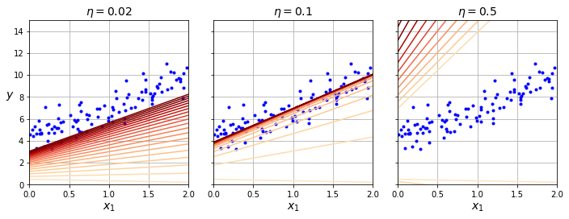
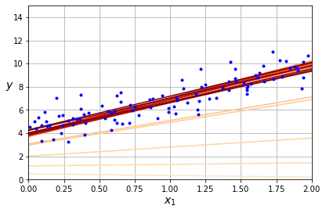
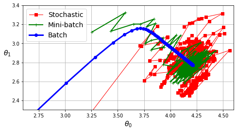

Section 2 — Training Linear Models & Support Vector Machines
Κανόνας πηγών: Το παρόν υλικό είναι απλή ελληνική επεξήγηση μόνο των ανεβασμένων αρχείων DAMA61 ΟΣΣ2, Géron Chapter 4/5, δύο notebooks και δύο απομαγνητοφωνήσεων. Οι τίτλοι και η ομαδοποίηση αποτελούν διδακτική ταξινόμηση της ίδιας ύλης. Δεν προστίθεται νέα θεωρία, νέο dataset ή πρωτότυπη άσκηση.
Ανάγνωση παραπομπών: Η «σελίδα PDF» είναι η θέση στο πραγματικό ανεβασμένο αρχείο. Το «κελί» στο .ipynb αριθμείται από 0, όπως βρίσκεται αποθηκευμένο στη σειρά cells. Οι απομαγνητοφωνήσεις δεν περιλαμβάνουν timestamps και τεκμηριώνονται με γραμμές.
Κώδικας: Παραθέτουμε μόνο πραγματικά αποσπάσματα notebook και εξηγούμε τη σύνδεσή τους με τα προηγούμενα κελιά. Δεν ισχυριζόμαστε νέα εκτέλεση. NOT EXECUTED (νέα εκτέλεση). Αποθηκευμένα outputs του πρωτοτύπου αναγνωρίζονται ρητά ως τέτοια.
Part 2 — Επαναληπτική εκπαίδευση με Gradient Descent
Μάθημα 04 — Gradient Descent και Batch Gradient Descent
Προαπαιτούμενα από την υπάρχουσα ύλη: Μάθημα 03· απλή έννοια παραγώγου.
Από την πηγή — τι διδάσκεται
Η Gradient Descent, ή κάθοδος κλίσης, αναζητά χαμηλότερες τιμές της συνάρτησης κόστους κάνοντας διαδοχικές αλλαγές στα βάρη. Το βιβλίο χρησιμοποιεί την εικόνα ενός ανθρώπου μέσα σε ομίχλη που ακολουθεί την κατηφορική κλίση προς τον πυθμένα κοιλάδας. Πρόκειται για αναλογία του βιβλίου, όχι για δικό μας παράδειγμα. Αν η αρχική τιμή βαρών είναι τυχαία, τα επόμενα βήματα επιχειρούν κάθε φορά να μειώσουν το σφάλμα.
Η μερική παράγωγος μετρά την τοπική αλλαγή του σφάλματος ως προς ένα βάρος. Το gradient συγκεντρώνει τις μερικές παραγώγους όλων των βαρών. Η ενημέρωση ακολουθεί το αρνητικό gradient, επειδή το θετικό δείχνει προς την αύξηση. Η παράμετρος η, learning rate, καθορίζει πόσο μεγάλο θα είναι το βήμα. Στην Batch Gradient Descent κάθε βήμα χρησιμοποιεί το σύνολο των παραδειγμάτων.
Οπτική εξήγηση — πραγματικά σχήματα της πηγής

Αυθεντικό αποθηκευμένο διάγραμμα: 04_training_linear_models(1).ipynb — κελί 30 (αρίθμηση από το 0). Αναπαράγεται από το υπάρχον output του notebook· NOT EXECUTED εδώ.
Πώς να το διαβάσεις: Δες πώς τα επαναλαμβανόμενα βήματα εμφανίζονται ως διαφορετικές ευθείες. Η μικρή τιμή η προχωρά αργά. Η υπερβολικά μεγάλη τιμή η μπορεί να οδηγήσει σε αποκλίνουσα εκπαίδευση, όπως δείχνει το τρίτο πάνελ.
Απλή επεξήγηση της ίδιας έννοιας
Με πολύ μικρό learning rate γίνονται πολλά μικρά βήματα και η εκπαίδευση αργεί. Με υπερβολικά μεγάλο learning rate υπάρχει κίνδυνος να πηδά από τη μία πλευρά της κοιλάδας στην άλλη και να αποκλίνει. Ο Géron δείχνει ρητά τις περιπτώσεις στα σχήματα 4-4, 4-5 και 4-8. Εξηγεί επίσης ότι διαφορές στην κλίμακα των χαρακτηριστικών δημιουργούν επιμήκη γεωμετρία της συνάρτησης κόστους και επιβραδύνουν τη σύγκλιση. Η κλιμάκωση, όπως με StandardScaler, είναι σημαντική εδώ. Ένα epoch είναι ένας κύκλος πάνω στο σύνολο εκπαίδευσης.
Καθοδηγούμενη εξήγηση — ακολουθούμε αργά την ίδια πηγή
Εδώ δεν αλλάζουμε το μοντέλο αλλά τον τρόπο με τον οποίο βρίσκουμε τα βάρη του. Η Normal Equation προσπαθούσε να τα υπολογίσει μονομιάς. Η Gradient Descent ξεκινά από κάποιες τιμές και τις διορθώνει σε πολλά βήματα. Η ήδη υπάρχουσα εικόνα του Géron είναι το βουνό μέσα στην ομίχλη: παρακολουθούμε την τοπική κατηφορική κλίση, όχι έναν χάρτη ολόκληρης της κοιλάδας.
Στον τύπο νέων βαρών πρώτα υπολογίζεται το gradient του τωρινού σφάλματος, ύστερα πολλαπλασιάζεται με το η και μετά αφαιρείται από τα τωρινά βάρη. Το η είναι το learning rate. Το σύμβολο μείον έχει λόγο: η παράγωγος δείχνει την αύξηση και εμείς θέλουμε μείωση. Η λέξη Batch έχει επίσης κυριολεκτική σημασία: υπολογίζουμε το gradient χρησιμοποιώντας όλο το σύνολο εκπαίδευσης σε κάθε βήμα.
Στην αυθεντική Python το eta είναι 0.1, το n_epochs είναι 1000, το X_b @ theta δίνει τις τωρινές προβλέψεις και το X_b @ theta - y τις αποκλίσεις. Το X_b.T @ και ο συντελεστής δύο δια μ είναι τα συγκεκριμένα στοιχεία του τύπου MSE του βιβλίου. Η δεύτερη εντολή του βρόχου αφαιρεί η επί gradient. Το notebook καταγράφει τα ίδια βάρη με το προηγούμενο παράδειγμα. Αυτό είναι αποθηκευμένο αποτέλεσμα, όχι νέα εκτέλεση.
Οι τύποι της πηγής και τι σημαίνουν
Προφορική ανάγνωση και επεξήγηση: Η νέα τιμή βαρών ισούται με την παλιά μείον το learning rate επί το gradient του σφάλματος. Στο συγκεκριμένο γραμμικό πρόβλημα, το gradient του μέσου τετραγωνικού σφάλματος προκύπτει από δύο δια μ επί Χ ανάστροφο επί τη διαφορά των προβλέψεων από τους στόχους.
Αριθμητικό παράδειγμα ή εφαρμογή — αποκλειστικά από την πηγή
Αυθεντική εκτέλεση μέσα στο δοσμένο notebook: Με learning rate 0.1, 1.000 epochs και τα ίδια δεδομένα της Normal Equation το αποθηκευμένο αποτέλεσμα είναι theta = [[4.21509616], [2.77011339]]. Το notebook δείχνει τις διαδρομές για η 0.02, 0.1 και 0.5.
Βασική Python από το πραγματικό notebook
Πριν από τον κώδικα: Η διαδικασία και η σειρά των εντολών έχουν οριστεί από τα συγκεκριμένα κελιά του δοσμένου notebook. Δεν δημιουργούμε νέα υλοποίηση.
Ακριβές απόσπασμα του παρεχόμενου 04_training_linear_models(1).ipynb, κελί 27 (αρίθμηση από 0):
eta = 0.1 # learning rate
n_epochs = 1000
m = len(X_b) # number of instances
np.random.seed(42)
theta = np.random.randn(2, 1) # randomly initialized model parameters
for epoch in range(n_epochs):
gradients = 2 / m * X_b.T @ (X_b @ theta - y)
theta = theta - eta * gradientsΑκριβές απόσπασμα του παρεχόμενου 04_training_linear_models(1).ipynb, κελί 29 (αρίθμηση από 0):
thetaΕπεξήγηση των πραγματικών βημάτων: Το κελί 27 αρχίζει με eta=0.1, ορίζει 1.000 epochs και το πλήθος δειγμάτων. Δημιουργεί τυχαία αρχικά theta, κατόπιν ο βρόχος for epoch επαναλαμβάνει υπολογισμό gradients και ενημέρωση theta. Το κελί 29 διαβάζει τα τελικά βάρη· δεν κάνει νέα εκπαίδευση. Η αναπαραγωγή απαιτεί τα X_b και y από τα προηγούμενα κελιά.
Εκτέλεση: NOT EXECUTED εδώ· οποιαδήποτε αριθμητική έξοδος παραπάνω είναι αποθηκευμένη στο πρωτότυπο notebook.
Τι ακριβώς αλλάζει σε μία ενημέρωση;
Η ΟΣΣ2 δίνει . Κράτα σταθερή τη σειρά των πράξεων: πρώτα υπολογίζεται το gradient της τρέχουσας συνάρτησης κόστους, ύστερα πολλαπλασιάζεται με το learning rate και τέλος αφαιρείται από τα παλιά βάρη. Στο αυθεντικό παράδειγμα το , το πλήθος των εποχών είναι 1.000 και η ενημέρωση εφαρμόζεται ξανά για κάθε εποχή.
Το δεν είναι ο στόχος ούτε η πρόβλεψη: είναι μια ομάδα από μερικές παραγώγους του σφάλματος. Η πηγή δείχνει γιατί, με κατάλληλο μικρό βήμα, η αφαίρεσή του μπορεί να μειώνει το σφάλμα. Πηγή: ΟΣΣ2, σελ. 10· Géron, Chapter 4 — Batch Gradient Descent, σελ. PDF 9–11.
Διαβάζουμε τον πραγματικό κώδικα γραμμή προς γραμμή
Οι παρακάτω παρατηρήσεις εξηγούν μόνο τις εντολές που υπάρχουν ήδη στα παρατιθέμενα αποσπάσματα. Δεν αποτελούν νέο πρόγραμμα. Για την ακριβή προέλευση κάθε block χρησιμοποιούμε τις ήδη σημειωμένες παραπομπές notebook/κελιού του μαθήματος. Νέα εκτέλεση: NOT EXECUTED.
Απόσπασμα 1, στη σειρά της πηγής: - eta = 0.1 # learning rate — Ορίζει το learning rate στην τιμή που έδωσε ο συγγραφέας. - n_epochs = 1000 — Ορίζει πόσες εποχές θα επαναληφθεί η διαδικασία του συγκεκριμένου παραδείγματος. - m = len(X_b) # number of instances — Καταγράφει το πλήθος των δειγμάτων που θα χρησιμοποιηθούν στους υπολογισμούς. - np.random.seed(42) — Ορίζει τη σταθερή αρχική κατάσταση τυχαιότητας για αναπαραγωγιμότητα του συγκεκριμένου παραδείγματος. - theta = np.random.randn(2, 1) # randomly initialized model parameters — Δημιουργεί τα αρχικά, τυχαία βάρη του μοντέλου πριν από τις ενημερώσεις. - for epoch in range(n_epochs): — Αρχίζει την επανάληψη των εποχών εκπαίδευσης, με το πλήθος που έχει οριστεί ακριβώς πιο πάνω. - gradients = 2 / m * X_b.T @ (X_b @ theta - y) — Υπολογίζει το gradient του σφάλματος με τον τύπο Batch Gradient Descent του βιβλίου, χρησιμοποιώντας τον πίνακα εκπαίδευσης. - theta = theta - eta * gradients — Αφαιρεί από τα παλιά βάρη το learning rate επί το gradient: η βασική ενημέρωση Gradient Descent. Απόσπασμα 2, στη σειρά της πηγής: - theta — Ζητά να εμφανιστεί η τιμή που έχει ήδη υπολογιστεί από τα προηγούμενα βήματα του notebook.
Περιορισμοί και προσοχή
Η Batch Gradient Descent χρησιμοποιεί όλα τα δεδομένα σε κάθε βήμα και μπορεί να είναι αργή για πολύ μεγάλα datasets. Ο τύπος gradient είναι συγκεκριμένος για την τετραγωνική συνάρτηση κόστους της γραμμικής παλινδρόμησης.
Τι κρατώ από το υπάρχον μάθημα
Gradient = κατεύθυνση αύξησης σφάλματος· αρνητικό gradient = κατεύθυνση μείωσης· η = μέγεθος βήματος.
Μάθημα 05 — Stochastic Gradient Descent και Learning Schedule
Προαπαιτούμενα από την υπάρχουσα ύλη: Μάθημα 04.
Από την πηγή — τι διδάσκεται
Η Stochastic Gradient Descent, ή SGD, είναι άλλη εκδοχή της ίδιας ιδέας της καθόδου κλίσης. Η ουσιαστική διαφορά είναι ότι σε κάθε βήμα επιλέγει ένα τυχαίο δείγμα από το σύνολο εκπαίδευσης. Έτσι δεν χρειάζεται να υπολογίζει το gradient σε όλα τα δείγματα σε κάθε μεμονωμένη ενημέρωση. Το βιβλίο επισημαίνει ότι αυτή η δυνατότητα επιτρέπει γρήγορες ενημερώσεις και επεξεργασία πολύ μεγάλων συνόλων που δεν χρειάζεται να βρίσκονται εξ ολοκλήρου στη μνήμη.
Το τίμημα είναι η διακύμανση: η πορεία του κόστους δεν πέφτει ομαλά αλλά ταλαντώνεται. Για να μειώνονται οι ταλαντώσεις κοντά στο ελάχιστο, το βιβλίο παρουσιάζει learning schedule: κανόνα που αλλάζει το learning rate όσο περνούν οι επαναλήψεις.
Οπτική εξήγηση — πραγματικά σχήματα της πηγής

Αυθεντικό αποθηκευμένο διάγραμμα: 04_training_linear_models(1).ipynb — κελί 33 (αρίθμηση από το 0). Αναπαράγεται από το υπάρχον output του notebook· NOT EXECUTED εδώ.
Πώς να το διαβάσεις: Η SGD χρησιμοποιεί διαφορετικό τυχαίο δείγμα ανά ενημέρωση. Οι ευθείες του πραγματικού notebook δεν μετακινούνται ομαλά όλες μαζί· αυτό είναι το χαρακτηριστικό που θέλουμε να παρατηρήσουμε.
Απλή επεξήγηση της ίδιας έννοιας
Stochastic σημαίνει ότι παίζει ρόλο η τύχη στην επιλογή του παραδείγματος. Δεν αλλάζει ο σκοπός της εκπαίδευσης· παραμένει η μείωση του σφάλματος. Αλλά ένα μεμονωμένο δείγμα μπορεί να δείχνει διαφορετική κλίση από ολόκληρο το dataset. Γι’ αυτό δεν πρέπει να περιμένουμε κάθε μικρό βήμα να βελτιώνει το σφάλμα με τέλεια ομαλότητα.
Το notebook παρουσιάζει αφενός χειροκίνητη SGD, αφετέρου την έτοιμη κλάση SGDRegressor. Ο συγγραφέας χρησιμοποιεί ravel() ώστε οι στόχοι να έχουν μία διάσταση όπως απαιτεί το συγκεκριμένο fit.
Καθοδηγούμενη εξήγηση — ακολουθούμε αργά την ίδια πηγή
Στο Batch Gradient Descent κάθε αλλαγή εξαρτιόταν από όλα τα δείγματα μαζί. Η στοχαστική εκδοχή αλλάζει ακριβώς αυτό: χρησιμοποιεί ένα τυχαίο δείγμα σε κάθε μικρή ενημέρωση. Το λάθος που πρέπει να αποφύγεις είναι να νομίσεις ότι το μοντέλο έχει νέο στόχο. Ο στόχος παραμένει η μείωση του σφάλματος, αλλά η πληροφορία για το βήμα προέρχεται από μικρότερο μέρος των δεδομένων.
Γι’ αυτό ο Géron δείχνει το σφάλμα να ταλαντώνεται ενώ, συνολικά, πλησιάζει τη σωστή περιοχή. Η πηγή χρησιμοποιεί learning schedule, δηλαδή κανόνα για την αλλαγή του learning rate κατά τις επαναλήψεις. Στον δοσμένο τύπο το t είναι ο μετρητής των βημάτων και τα t μηδέν και t ένα είναι οι παράμετροι της συγκεκριμένης συνάρτησης. Καθώς ο παρονομαστής μεγαλώνει, το βήμα μικραίνει.
Η χειροκίνητη λύση του notebook παρουσιάζει τις ενημερώσεις μία προς μία. Η έτοιμη κλάση SGDRegressor υλοποιεί την ίδια οικογένεια εκπαίδευσης· το y.ravel() μετατρέπει το ήδη υπάρχον σχήμα του διανύσματος στόχων για την κλήση που ακολουθεί. Δεν είναι πρόσθετη μέθοδος στατιστικής.
Οι τύποι της πηγής και τι σημαίνουν
Προφορική ανάγνωση και επεξήγηση: Στο πραγματικό παράδειγμα, το learning rate στη στιγμή ταυ ισούται με το ταυ μηδέν δια του αθροίσματος ταυ και ταυ ένα. Όσο αυξάνει ο μετρητής ταυ, το βήμα μικραίνει.
Αριθμητικό παράδειγμα ή εφαρμογή — αποκλειστικά από την πηγή
Υπαρκτός αλγόριθμος του notebook: Το κελί 33 χρησιμοποιεί n_epochs=50, t0=5, t1=50 και σε κάθε εσωτερική επανάληψη επιλέγει random_index, το δείγμα xi, τον στόχο yi, υπολογίζει gradient γι’ αυτό το δείγμα, ενημερώνει η και βάρη. Το κελί 36 εμφανίζει τα εκπαιδευμένα βάρη της SGDRegressor.
Βασική Python από το πραγματικό notebook
Πριν από τον κώδικα: Η διαδικασία και η σειρά των εντολών έχουν οριστεί από τα συγκεκριμένα κελιά του δοσμένου notebook. Δεν δημιουργούμε νέα υλοποίηση.
Ακριβές απόσπασμα του παρεχόμενου 04_training_linear_models(1).ipynb, κελί 35 (αρίθμηση από 0):
from sklearn.linear_model import SGDRegressor
sgd_reg = SGDRegressor(max_iter=1000, tol=1e-5, penalty=None, eta0=0.01,
n_iter_no_change=100, random_state=42)
sgd_reg.fit(X, y.ravel()) # y.ravel() because fit() expects 1D targetsΑκριβές απόσπασμα του παρεχόμενου 04_training_linear_models(1).ipynb, κελί 36 (αρίθμηση από 0):
sgd_reg.intercept_, sgd_reg.coef_Επεξήγηση των πραγματικών βημάτων: Το κελί 35 εισάγει SGDRegressor, ορίζει max_iter, tol, penalty=None, eta0, n_iter_no_change, random_state και καλεί fit(X, y.ravel()). Το κελί 36 εμφανίζει intercept_ και coef_. Αυτές είναι αυτούσιες εντολές του δοσμένου παραδείγματος, όχι νέα παραμετροποίηση.
Εκτέλεση: NOT EXECUTED εδώ· οποιαδήποτε αριθμητική έξοδος παραπάνω είναι αποθηκευμένη στο πρωτότυπο notebook.
Διαβάζουμε τον πραγματικό κώδικα γραμμή προς γραμμή
Οι παρακάτω παρατηρήσεις εξηγούν μόνο τις εντολές που υπάρχουν ήδη στα παρατιθέμενα αποσπάσματα. Δεν αποτελούν νέο πρόγραμμα. Για την ακριβή προέλευση κάθε block χρησιμοποιούμε τις ήδη σημειωμένες παραπομπές notebook/κελιού του μαθήματος. Νέα εκτέλεση: NOT EXECUTED.
Απόσπασμα 1, στη σειρά της πηγής: - from sklearn.linear_model import SGDRegressor — Φέρνει στον κώδικα τη βιβλιοθήκη, τη συνάρτηση ή την κλάση που χρησιμοποιείται ήδη σε αυτό το δοσμένο παράδειγμα. - sgd_reg = SGDRegressor(max_iter=1000, tol=1e-5, penalty=None, eta0=0.01, — Δημιουργεί το μοντέλο στοχαστικής βαθμιδωτής κατάβασης με τις υπάρχουσες ρυθμίσεις εκπαίδευσης. - n_iter_no_change=100, random_state=42) — Δηλώνει τις πραγματικές ρυθμίσεις επανάληψης, σύγκλισης ή αναπαραγωγιμότητας της πηγής. - sgd_reg.fit(X, y.ravel()) # y.ravel() because fit() expects 1D targets — Εκπαιδεύει το ήδη ορισμένο μοντέλο στα συγκεκριμένα χαρακτηριστικά και τις γνωστές εξόδους. Απόσπασμα 2, στη σειρά της πηγής: - sgd_reg.intercept_, sgd_reg.coef_ — Διαβάζει τον σταθερό όρο και τα βάρη που έμαθε το μοντέλο, χωρίς νέα εκπαίδευση.
Περιορισμοί και προσοχή
Η SGD δεν εγγυάται ομαλή μείωση κόστους σε κάθε βήμα. Χρειάζεται προσοχή στο learning rate, στην αναπαραγωγιμότητα και στην κλιμάκωση των χαρακτηριστικών.
Τι κρατώ από το υπάρχον μάθημα
Batch: όλα τα δείγματα ανά βήμα· Stochastic: ένα τυχαίο δείγμα ανά βήμα· learning schedule μειώνει το βήμα.
Μάθημα 06 — Mini-batch Gradient Descent και σύγκριση τριών εκδοχών
Προαπαιτούμενα από την υπάρχουσα ύλη: Μαθήματα 04–05.
Από την πηγή — τι διδάσκεται
Η Mini-batch Gradient Descent βρίσκεται ανάμεσα στη Batch και στη Stochastic. Σε κάθε βήμα χρησιμοποιεί μικρή ομάδα δειγμάτων, όχι ολόκληρο το training set και όχι μόνο ένα δείγμα. Στο βιβλίο εξηγείται ότι αυτός ο τρόπος μπορεί να αξιοποιεί αποδοτικά πράξεις πινάκων και έχει λιγότερο ασταθή πορεία από την καθαρά στοχαστική μέθοδο.
Ο πίνακας 4-1 του Géron συγκρίνει τις τεχνικές εκπαίδευσης γραμμικής παλινδρόμησης ως προς υποστήριξη μεγάλων συνόλων, αριθμό χαρακτηριστικών, κλιμάκωση και υπερπαραμέτρους. Η σύγκριση περιλαμβάνει επίσης τις άμεσες λύσεις Normal Equation και SVD.
Οπτική εξήγηση — πραγματικά σχήματα της πηγής

Αυθεντικό αποθηκευμένο διάγραμμα: 04_training_linear_models(1).ipynb — κελί 39 (αρίθμηση από το 0). Αναπαράγεται από το υπάρχον output του notebook· NOT EXECUTED εδώ.
Πώς να το διαβάσεις: Διάβασε το υπόμνημα: κόκκινο για Stochastic, πράσινο για Mini-batch, μπλε για Batch. Οι τροχιές δεν είναι ίδιες, επειδή διαφέρει πόσα δεδομένα μπαίνουν σε κάθε βήμα ενημέρωσης.
Απλή επεξήγηση της ίδιας έννοιας
Στη Mini-batch GD χρειάζεται να ξεχωρίζουμε τρεις ποσότητες: πόσα συνολικά δείγματα έχουμε, πόσα βάζουμε σε ένα mini-batch και πόσα βήματα απαιτούνται για ένα epoch. Το notebook χρησιμοποιεί minibatch_size=20, ανακατεύει τους δείκτες ανά epoch και ενημερώνει τα βάρη με το gradient της εκάστοτε ομάδας.
Αν παρακολουθήσουμε τις πορείες που δείχνει το διάγραμμα 4-11, η Batch κατεβαίνει πιο ομαλά, η SGD κάνει περισσότερα άτακτα βήματα και η Mini-batch έχει ενδιάμεση συμπεριφορά. Η πηγή δεν υποστηρίζει ότι ένα από τα τρία είναι απολύτως καλύτερο σε κάθε πρόβλημα.
Καθοδηγούμενη εξήγηση — ακολουθούμε αργά την ίδια πηγή
Το mini-batch δεν αποτελεί τέταρτο άσχετο αλγόριθμο. Βρίσκεται ανάμεσα στο πλήρες batch, που χρησιμοποιεί όλα τα δείγματα για το gradient, και στο stochastic, που χρησιμοποιεί ένα. Το gradient υπολογίζεται για μια μικρή ομάδα δειγμάτων. Ο πίνακας 4-1 του βιβλίου συγκρίνει τις τρεις εκδοχές ως προς τα χαρακτηριστικά τους.
Στο συγκεκριμένο notebook το minibatch_size είναι 20 και το n_epochs είναι 50. Η np.random.permutation(m) αλλάζει τη σειρά των διαθέσιμων δειγμάτων, πριν χωριστούν διαδοχικά σε μικρές ομάδες. Το learning schedule υπάρχει και εδώ· δεν προσθέτουμε άλλη συνάρτηση από δική μας επιλογή. Ο σκοπός είναι να δούμε ότι αλλάζει το πλήθος των δειγμάτων που συμμετέχουν σε μία ενημέρωση.
Η σύγκριση των διαδρομών των βαρών στο ίδιο notebook βοηθά να διαβάζουμε το αποτέλεσμα: οι εκδοχές δεν προχωρούν με τον ίδιο ακριβώς τρόπο, παρότι αναζητούν χαμηλότερο κόστος. Η διαφορά δεν είναι ο τύπος της γραμμικής πρόβλεψης αλλά ο τρόπος υπολογισμού και ενημέρωσης των παραμέτρων.
Αριθμητικό παράδειγμα ή εφαρμογή — αποκλειστικά από την πηγή
Αυθεντικό παράδειγμα: Στο κελί 39 ο συγγραφέας χρησιμοποιεί n_epochs=50, minibatch_size=20, t0=200, t1=1000, κάνει np.random.permutation(m) και χωρίζει διαδοχικά σε ομάδες είκοσι. Το ίδιο κελί σχεδιάζει τις τρεις πορείες για τα βάρη.
Υπάρχον παράδειγμα ή αλγόριθμος
Ο αλγόριθμος του κελιού 39 είναι ο πραγματικός κώδικας της πηγής. Επειδή στο ίδιο κελί συνδυάζονται ο πυρήνας της εκπαίδευσης με βοηθητικό κώδικα αποκλειστικά για το διάγραμμα, εδώ καταγράφεται η λειτουργία του αντί να παρουσιαστεί ως νέο, τροποποιημένο αυτοτελές πρόγραμμα. Η ακριβής εκτέλεση είναι στο αρχικό notebook.
Περιορισμοί και προσοχή
Η τιμή minibatch_size=20 είναι η τιμή του παραδείγματος, όχι γενικός κανόνας. Δεν έγινε νέα εκτέλεση του γραφήματος.
Τι κρατώ από το υπάρχον μάθημα
Mini-batch = gradient από μικρή ομάδα. Η επιλογή μεγέθους ομάδας και learning rate επηρεάζει τη συμπεριφορά.